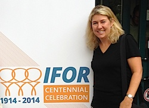
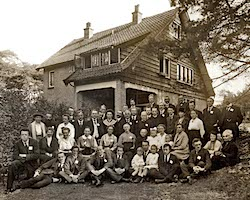
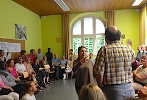
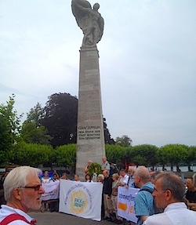
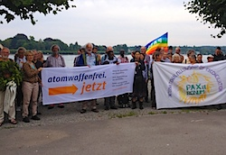
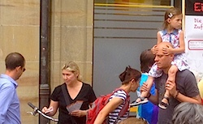
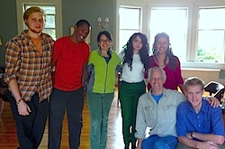

Friends,
I write to you from Konstanz, Germany.
|

FOR USA Executive Director Rev. Kristin Stoneking.

Participants in one of the first International FOR conferences, in 1919. View a high resolution version, with names. (Photo: Swarthmore College Peace Collection)
|
One hundred years ago this month, at the outbreak of World War I, German Lutheran Friedrich Siegmund-Schultze and English Quaker Henry Hodgkin shook hands and pledged a fellowship of interfaith pacifism.
They urged their governments to withdraw from war, to disarm their militaries, and to work toward international reconciliation.
It is an effort still underway today.
FOR USA and the broader community of International FOR (IFOR) of which we are a part echoes the demands of German pacifists as they stood on the precipice of a century of violence: kein Geld für Krieg -- no money for war.
A global movement for peace
The idea of the Fellowship of Reconciliation spread quickly after that day in 1914, from England and Germany throughout Europe and to the United States -- where FOR USA was founded in 1915, in Garden City, New York.
A century later, I joined more than 300 participants from every corner of the earth gathering this past week back in Konstanz, as representatives of social movements against war and militarism.
|



International FOR delegates from around the world planning for direct action (top) and demonstrating against war and militarism in Konstanz, Germany.
|
The opening ceremony included addresses by Rev. Lucas Johnson -- formerly FOR-USA regional coordinator and now the International FOR coordinator -- Nobel Laureate Mairead Maguire, Blas Garcia of Servicio Paz y Justicia Colombia, "Alternative Nobel" laureate Sulak Sivaraksa from Thailand, Richard Okwerar from MIR Uganda, and domestic violence activist Beena Sebastian of FOR India, and Marcela Zoughbi who spoke of peace work in Palestine.
As I looked around the room at the faces prepared to walk to the banks of Lake Constance and stand in protest of the presence of nuclear weapons in Europe and especially in Germany, I thought, "These are the faces of resistance. These are the spiritual descendants of persons who have resisted war, persecution, tyranny, Nazism and injustice of every sort."
I felt privileged and humbled to stand amongst these persons.
Kein Geld für Krieg. No money for war.
Today, we see movements for peace and justice around the world, in the midst of economic and political climates that seem designed to drive us toward poverty and violence. Today, indeed, we have no money for war!
On the first day in Konstanz, we gathered in front of Commerzbank, a bank in Germany which has funded militarism, particularly in Germany. We distributed leaflets with this statement -- Kein Geld für Krieg -- where passersby seemed receptive. As former FOR USA Executive Director Mark Johnson wrote in his reflection of the event:
|

FOR USA Executive Director Kristin Stoneking hands out flyers declaring "no money for war" in downtown Konstanz.
|
"The International Fellowship of Reconciliation began the celebration of its 100th anniversary ... protesting the involvement of the scientific and technological experts in the work of militarism in this region where Switzerland, Germany, and Austria meet, in front of Commerzbank, a financial foundation of these companies and specifically with investments in industries which build atomic weapons.
"The procession moved on to the cathedral in the middle of the town where a fast was begun for the two days of the conference and where delegates were invited to prayers three times a day. ...
"Welcomed by the Mayor of Konstanz, the Council participants were acknowledged here constituting for a few days, the world capital of peace."
As you may have seen earlier this week through FOR's social media, Japan FOR has called for support from all other IFOR branches for the current threats against the anti-militarism enshrined in the Japanese constitution. Article 9, instituted following World War II, prohibits Japan from ever engaging in war -- a prohibition some in the current government are attempting to abolish.
Kyoko Iitaka, general secretary of Japan FOR, spoke powerfully this week when we commemorated the lives lost in the U.S. nuclear bombings of Hiroshima and Nagasaki. "The law should be for the people," she said, "not the people for the law!"
She is asking for global support for a petition to the Japanese prime minister to "save Japan's peace constitution." Japanese activists want to ensure there is no money for war. I have signed, and I hope you will as well.
For peace, justice and reconciliation
As the International Fellowship of Reconciliation heads into its second century and FOR USA prepares to celebrate 100 years in 2015, we reaffirm that we aren't simply opposed to war – we are for an interconnected fellowship of people, working to resolve conflict and do justice through the transformative power of nonviolence.
|

Participants in the second International FOR Fellowship School this past year at FOR USA's headquarters in New York.
|
One of the most visible initiatives by International FOR is the Fellowship School which was held this past year at FOR USA's headquarters in New York. FOR chapters around the world are working to train the next generation of peace activists, and nonviolence education is a key part of that process.
FOR USA has also been held up as a model for interfaith peacework, and I led a workshop at the international gathering with Virginia Baron, former editor of Fellowship magazine, and Lili Baxter, former FOR national council member, on working with diverse communities of faith. While no branch of FOR restricts membership to people of particular belief, many European chapters continue to reflect their historical roots in Christian pacifism. FOR USA has long worked to integrate peace fellowships from many traditions, most recently in our upcoming Future Is Now conference being led by faith activists with roots in Judaism, Islam, Christianity and other faiths.
In closing, I hope this report from a global convening of peace activists gives you hope. While our individual efforts sometimes seem small and often unheralded, your work -- our work -- is actually part of a worldwide network of people striving for peace, justice, and reconciliation.
Kein Geld für Krieg, now and in the next century.
Rev. Kristin Stoneking
Executive Director
Fellowship of Reconciliation |

{kind=link}